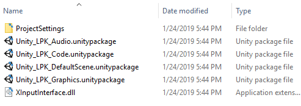
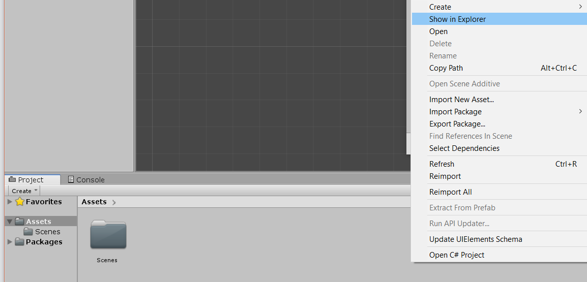
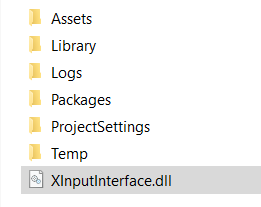

The XInputInterface.dll enables controller vibration! It is included in the LPK download.

Please note that implementing this will make your project windows-exclusive. You do not need to import this .dll if you wish to use the LPK on platforms other than windows.
Navigate to the location your project is saved at. This can be done by right clicking in the Project window within the editor, and selecting "Show in Explorer".

Close the Unity project (if it is open).
Copy the XInputInterface.dll from the extracted LPK folder you have downloaded, and paste it next to the assets folder of your project.
